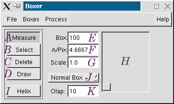

Usage
boxer [<filename>] [area=<num>,<denom>,<box size>]
Description
Boxer is a graphical program for selecting particles from micrographs (or
CCD frames). Particle selection can be performed manually or semi-automatically.
Run the program with the name of the image containing particles to be selected.
Machines with limited memory
Since these images are often very large, possibly larger than your machine's memory, the 'area=' option is provided to allow only a portion of the image to be examined at once. Currently this option only works with images in the MRC format (Without this option, boxer can read images in any of the supported file formats). The 'area=' option has 3 parameters. The second parameter is the number of regions to split the micrograph into. This number must be an integer squared (ie - 4,9,16,...). The third number is the particle box size. When individual sections of the micrograph are read, enough overlap between sections is allowed to insure that particles near the edge of the secion can still be selected. Finally, the first number specifies which area should be read. This value is ranges from 0 to n-1. That is, if the second number is 4, the first number is 0,1,2 or 3. You can run 'iminfo <image file>' to determine how much memory the entire micrograph will take. Generally you want to make sure you have at least 50% more memory than this. If you have less, you should use the 'area=' option or find a machine with more memory.
Using boxer
The control panel for boxer is shown below.

A. Measure Mode - The mouse can be used to measure distances in the micrograph
B. Select Mode - The mouse can be used to select particles and/or drag existing
boxes
C. Delete Mode - The mouse can be used to delete particles in either view
D. Draw Mode - The mouse can be used to blank out areas of the micrograph
containing contamination to prevent autoboxing
E. Box Size - The box size in pixels for Select and Draw mode
F. A/Pix - Angstroms/pixel used in Measure Mode
G. Scale - The scale used in the image display
H. Panner - This allows you to pan around the micrograph
I. Helix Mode - Special helix boxing mode allows filamentous particles to
be extracted as a set of particles
J. Helix Submode - Allows for some subtle modifications to the helix boxing
mode
K. Overlap - Specifies the amount of overlap between boxes in helix mode
There are 3 windows in boxer. The control panel, the micrograph view, and the particle view. The control panel is described above. The micrograph view will display some fraction of the overall micrograph. The 'scale' in the control panel determines the scaling factor for this window. To pan around the micrograph, either use the Panner (H) in the control panel, or drag directly in the micrograph view with the middle mouse button. The particle view contains the individual boxed out particles. In select mode, you can click on a particle in the particle view and that particle will be centered in the micrograph view. In delete mode, particles can be removed from either the micrograph or the particle view.
To adjust the brightness and contrast of either the image view or the particle view, click the center mouse button anywhere in the image. This will cause an 'image inspector' window to appear. This contains a variety of adjustments, and even allows you to save snapshots of the window to use in web pages or reports.
Semi-automatic Boxing
Particles can be semi-automatically selected. This is done with a simple correlation based method. There are four versions of this feature. Two are currently functional, one for use on new particles where no 3D model yet exists, and another for cases where a low-resolution 3D model is available. This feature is relatively easy to use, and generally works reasonably well, especially when a 3D reference is available:
No 3D model available:
When you've got all of the particles in the micrograph selected, you can save the selected particles using the 'Save Boxed Particles' command on the Boxes menu. You may also wish to save a box database file (containing a list of box positions in the micrograph). If you ever wish to go back to the original micrograph and modify the box positions, you'll need this file. This is saved using the 'Save Boxes' option on the Boxes menu.
Preliminary 3D model available:
The basis for this technique is preparing a set of reference particles from the available 3D model. Unlike the above method, no rotational averaging is performed, making the particle matching much more accurate. However, this means each reference must be prepared over a range of angles of in-plane rotation. Since this would produce a very large number of references which would make automatic boxing take prohibitively long, a novel procedure for determining an optimal smaller set of references is used. Once the reference set has been prepared, they may be reused. A script, new in version 1.2, is provided to make preparing the references easier. The script performs the following tasks. Note: you do NOT need to perform these tasks manually :
To do all of this in one step, simply run:
makeboxref.py <threed file> [sym=<sym>] [nref=<n to gen>] [invert] [ang=<dalt>] [phi=<dphi>]
Generally you don't want to specify ang= or phi=, the automatic values
will suffice. EMAN uses higher densities as positive values by default. Generally
electron cryomicrographs will have smaller values for higher densities. If
this is the case for you, then you will want to specify the invert
option, so the reference image contrast matches your micrograph images.
nref specifies the number of reference images to generate. For an asymmetric
particle, you may want as many as 40-50. With some symmetry, you may be able
to drop this. Generally you'll pick a larger value than you expect to use,
then examine the results manually with eman.
What you're looking for is a set of projections that represents all possible
unique views of your particle at some unspecified level of detail. Generally
more references will produce more accurate boxing, but will (obviously) take
a proportionally longer time. Note that when selecting a subset of particles
to use, you may truncate the list of references, but you should NOT randomly
select particles from the list. The particles are sorted in order of their
mathematical dissimilarity.
Now that you've got a set of reference images in boxref.hed/img, you're ready to autobox some micrographs:
Focal Pairs One common techniqe for locating particles in close to focus micrographs is to take a focal pair, and begin by locating the particles in the far from focus micrograph, where they are easier to find. Then the particles from the close to focus micrograph can be determined by mapping the boxes from one micrograph to the other. There are 2 ways to accomplish this mapping.
The first is somewhat manual, but works well in most cases. Locate the particles in the far from focus micrograph as described above. Then save the box positions to a file with the 'Save Box DB' menu item. Next, run boxer with the close to focus micrograph. Then read in the box database you just saved. Next you must manually adjust the positions of a few boxes in the micrograph. It's best to do this for at least one particle in each corner of the micrograph. Simply put the mouse in select mode and drag the boxes to their correct location. Note that it is VERY important to only do this for particles you can accurately adjust. Once you've moved a particle, it must be moved to the correct location. You cannot put it back where it started. If you make a mistake, clear the 'Clear Boxes' menu item and read the database in again. Once you've manually adjusted several box positions, select the 'Adjust Boxes' menu item. The other boxes will then be adjusted. If you did a good job manually moving the boxes, you should have a pretty good match now.
The second method for adjusting the box locations is fully automatic, but it requires that your computer have a lot of memory (enough for 2 micrographs at once), and it occasionally makes mistakes. For this method, box out the particles in the first micrograph as before. It's probably a good idea to save the particles and the box database for this micrograph before proceeding. Next, select the 'Focal Pair Autoalign' menu item. This will pop up a brief set of instructions. When you click OK, a file selector will appear. Select the file containing the close to focus micrograph. Boxer will then automatically align 1k x 1k areas of the first micrograph to the second micrograph. When it finishes, all of the box positions should be correct. You can now save the new box database and the boxed particles.
Iterative Centering
Sometimes, especially when using the first autoboxing method, the selected particles will not be well centered in their boxes. (In most cases, if the second autoboxing method is used, the centering will be quite good, and this procedure is not necessary). Previously, a program called cenalignint was often used to better center the particles when a problem did exist. The 'Iterative Centering' option in boxer mimics this procedure, but with several advantages. First, when centering already boxed particles, the edge of the particles would be filled in with zero when the particle was translated. This could lead to alignment problems later in processing. Second, this technique led to lots of stray files laying around. Third, there are no problems with particles being too close to the edge of the box and getting chopped in half.
Using this option in boxer will attempt to center the box positions as described in the cenalignint manual page. It does not work on all particles. For example, particles like GroEL, with very non-rotationally symmetric features in some views, work very poorly with this procedure. Using this technique on some particles will cause the boxes to become severely mispositioned. It is a good idea to save your box database before trying this option.
Normalize In the previous versions (before 1.2 (42)), boxer would
automatically normalize the micrograph after reading it in. This no longer
happens. A menu item is available if you wish to do this. Generally it's a
good idea, unless you have a specific reason not to.
Stripe Filter Some scanners (most notably Zeiss, now Z/I Imaging) produce noticable vertical stripe patterns in scanned images. This is due to poor averaging when normalizing the CCD. This problem has been improved in recent versions of the scanner, I'm told, but still exists for many existing scanners. This filter will average the center 1/2 of the micrograph vertically and subtract the resulting values along vertical lines. This will remove the stripe artifacts in most cases. However, if there is strong contamination, or if you have very large high-contrast particles, this technique may actually produce new vertical stripes. Sometimes it's useful, sometimes it's not.
Median Filters
Another way to find particles in a close to focus micrograph with poor
contrast is to filter the micrograph before locating the particles. Once the
box positions are known, the data can then be boxed out of the unfiltered
micrograph. The 'Process' menu allows you to apply several different median
filters to the raw micrograph in memory. Once you've selected the particles
in the close to focus image, save the box database, read the original image
back in, and read the box database from the file.
Boxing filaments/helices
Selecting helices is fairly straightforward. When the mouse is in helix mode, boxer will work as in 'select' mode, except pairs of boxes define the endpoints of a filament. That is, click once on one end of the filament, then click a second time one the other end of the filament. Boxer will create all of the particle boxes along the filament length. You can adjust the position of either endpoint. You may create as many such helical segments as you like within a single micrograph. The 'olap' parameter allows you to select how much overlap there should be between boxes. By default, the boxes will be separated by 'boxsize'-'Olap' pixels measured along the length of the helix.
There are several submodes for helix mode, which allow other useful operations to be performed. In 'normal mode' the boxes are created along a straight-line path connecting the endpoints, and the 'particles' are simply boxed out normally. In 'Rotate Helix' mode, each individual box will be rotated so the helical segment will be aligned vertically in the box. This assumes, of course, that the filament is straight, and the endpoints are properly centered.
A further refinement is the 'Align Helix' mode, which will attempt to follow the path of the helix between the 2 endpoints. The helical segments are then rotated to be vertical based on a local tangent to the helical path. This option is still experimental (1.2 (42)), and may not work well in all cases.
The final mode is 'Unbend' mode. This mode will carefully trace the path of the filament between the endpoints. The boxed out 'particles' are no longer simply rotated, but are now unbent utilizing tangents and normals to the helical path at each pixel location. Of course this cannot compensate for true structural distortions present when a helix is bent, but it should be better than doing nothing at all. This option does not yet work properly in version 1.2 (42), but should work in subsequent releases.
Other Options
Most of the other options are experimental at this point. The 'check for
drift' option is amusing, if not exceptionally useful. Once particles have
been selected from the micrograph, this option will do a rough determination
of the relative amount of drift present in various areas of the image. Boxer
will calculate the 2D power spectrum of particles within a small area around
each particle. The averaged power spectrum is then checked for asymmetry.
The degree and direction of the asymmetry are used as an indication of the
relative amount of drift. This will be displayed by drawing a line for each
box. The length of the line indicates the relative amount of drift. Note
that this value is relative. A micrograph with very little drift will still
have long lines in certain areas.
Special Notes
Don't use too long path for the image files. If the whole path plus file
name is over 1024 charaters, it will make this application crash.